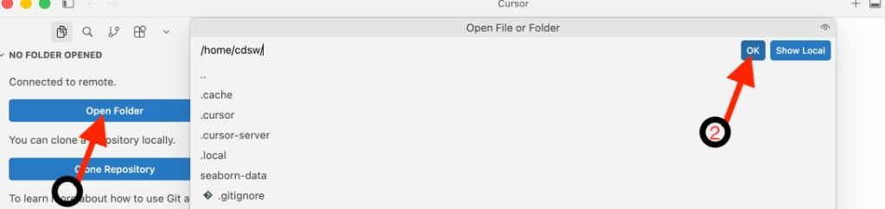

Connect each session¶
Once one-time setup is complete, connecting each session takes two steps.
1. Run the Connection Script¶
From a terminal inside your <your-path>/cai-cursor folder, run:
Run from inside the folder
These commands must be executed from inside your cai-cursor folder — the same folder that contains connect-cursor-cai.sh and connect-cai.env. If you open a new terminal, change into that folder first before running the command above.
2. Expected Output¶
When everything is configured correctly, you should see output similar to this:
*******************************************************************************
STOP — Have you completed all prerequisite steps? (see script header)
*******************************************************************************
The script will verify each item below before continuing:
[1] cdswctl installed and on PATH
[2] jq installed and on PATH
[3] SSH key pair generated (~/.ssh/cai and ~/.ssh/cai.pub)
[4] API_KEY set in connect-cai.env (current CAI API key, not Legacy)
[5] PROJECT_NAME set to <CAI_USERNAME>/<project-name>
[6] SSH public key uploaded to CAI → User Settings → Remote Editing
(cannot be verified automatically — you must confirm this yourself)
*******************************************************************************
==> Running prerequisite checks...
==> [1/6] cdswctl: OK
==> [2/6] jq: OK
==> [3/6] SSH key pair: OK (~/.ssh/cai)
==> [4/6] API_KEY configured in ./connect-cai.env: OK
==> [5/6] PROJECT_NAME: OK (your-username/teamXX-project)
warning: [6/6] SSH public key in CAI cannot be verified automatically.
warning: Confirm you have pasted this key into Cloudera AI:
warning: User Settings → Keys & Access → Remote Editing → SSH Public Key
warning: Public key file: ~/.ssh/cai.pub
warning: Preview: ssh-ed25519 AAAA...
==> Prerequisite checks passed (project: your-username/teamXX-project)
==> Logging in to https://ml-810351e3-a81.zeta1-cd.z30z-14kp.cloudera.site as your-username...
Login succeeded
==> Auto-selecting PBJ Workbench runtime (Python 3.12, standard edition)...
==> Selected runtime ID: 838
==> Starting session (cpu=2, memory=4GB, gpu=0)...
==> Session started: abc123sessionid
==> Creating SSH config entry 'cai-workbench' (port 3735)
==> Starting SSH endpoint (session=abc123sessionid, local port=3735)...
Forwarding local port 3735 to port 2222 on session abc123sessionid in project your-username/teamXX-project.
You can SSH to the session using: ssh -p 3735 cdsw@localhost
===============================================================================
SSH tunnel is active — keep this terminal open.
================================================================================
Sanity check (optional, in another terminal):
ssh -i ~/.ssh/cai -p 3735 cdsw@localhost
Connect in Cursor:
1. Cmd+Shift+P (Mac) or Ctrl+Shift+P (Windows/Linux)
2. "Remote-SSH: Connect to Host"
3. Choose: cai-workbench
4. File → Open Folder → /home/cdsw
When finished:
Press Ctrl+C here to stop the SSH tunnel.
The CAI session may still be running — stop it in the Workbench UI if needed.
==> Press Ctrl+C to stop the tunnel.
Session startup
Starting a session can take a minute or two depending on cluster resources. Verify the session shows Running in CAI → Project → Sessions if startup seems slow.
You can also verify from the CAI Workbench Project → Sessions tab that the new session has been created.

3. Connect in Cursor¶
Once you see SSH tunnel is active:
- Press Cmd+Shift+P (Mac) or Ctrl+Shift+P (Windows/Linux)
- Select Remote-SSH: Connect to Host
- Choose
cai-workbench
After a successful connection, Cursor opens a new window showing NO FOLDER OPENED and Connected to remote. You still need to open your project folder:
- Click the blue Open Folder button in the Explorer sidebar
- In the Open File or Folder dialog, enter
/home/cdswand click OK

You should then see CDSW [SSH: cai-workbench] in the sidebar with your file structure (e.g. .cursor-server, project files, etc.).

Your SSH connection to the CAI session is ready for use in Cursor. The window title should show cdsw [SSH: cai-workbench].
Sanity Check (Optional)¶
In a second terminal:
Run whoami — it should return your username. Type exit to leave.
4. Shut Down When Done¶
Press Ctrl+C in the script terminal to stop the SSH tunnel.
The CAI session may still be running — stop it in the Workbench UI if you want to free resources.

Next: Testing Cursor → · ← One-time Setup